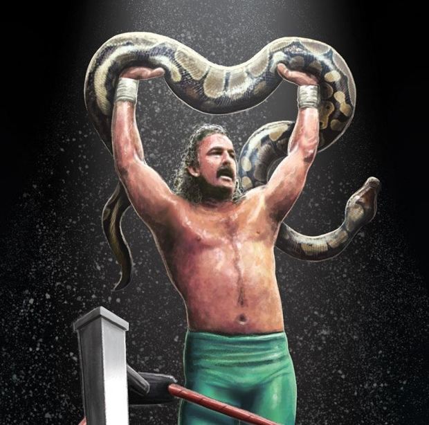

About Jake

Roberts' first major feud was against Ricky "The Dragon" Steamboat, beginning on a nationally televised episode of Saturday Night's Main Event in May 1986. Roberts executed the DDT on Steamboat on the exposed concrete floor right in front of his wife Bonnie and then proceeded to rest his snake Damien on top of a prone Steamboat. While Vince McMahon and booker George Scott were adamant about wanting the DDT to take place on the floor, Roberts initially refused until Steamboat told him that
he would be able to adequately protect himself from injury. Unfortunately, Steamboat was unable to stop his head from hitting the concrete and was rendered unconscious, sustaining a concussion.[9] After Steamboat's recovery, Steamboat introduced a "Komodo dragon" as his "pet" to combat the psychological effects of Roberts' snake. The feud continued with Steamboat winning most of the matches (losing only one because he threw Roberts back in the ring before the 10 count, then not beating said count himself), most notably a Snake Pit Match (ostensibly a no-DQ match) at The Big Event in Toronto, and the rematch on the October 1986 edition of Saturday Night's Main Event.